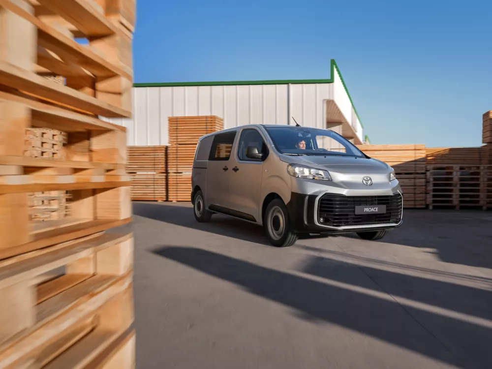

Ook voor de ritten van je zaak.
Bekijk de Proace samen met de kosten, de inzet en je onderhoudsplanning.
Bekijk de zakelijke aanpakDe Toyota Proace als deel van je werkdag: vergelijk laadruimte, toegang en inrichting voor het materiaal dat je meeneemt.
Bekijk de Proace als werkvoertuig. Bespreek de ruimte, de gekozen uitvoering en hoe je de wagen wilt inrichten. De juiste combinatie begint bij wat je ermee doet.
Modeloriëntatie, geen voorraadwagen. Proefrit en leverbaarheid worden op aanvraag afgestemd.

De toegang, bevestigingspunten en bereikbaarheid van je materiaal bepalen hoe praktisch de wagen werkt. Neem je gereedschap en gewenste inbouw mee in de vergelijking. Afmetingen, laadvermogen en trekgewicht worden per uitvoering gecontroleerd.
Bekijk de vergelijkingspuntenVerken de vorm, het interieur en de relevante uitvoering.
Neem je vragen en eventuele inruilwagen mee in het gesprek.
De Proace staat al in je aanvraag. De garage stemt beschikbaarheid en een moment met je af.
Bekijk de Proace samen met de kosten, de inzet en je onderhoudsplanning.
Bekijk de zakelijke aanpakDe modelpagina is geen voorraadlijst. Bekijk de afzonderlijke tweedehandsroute voor exemplaren en hun gegevens.
Bekijk tweedehandswagens